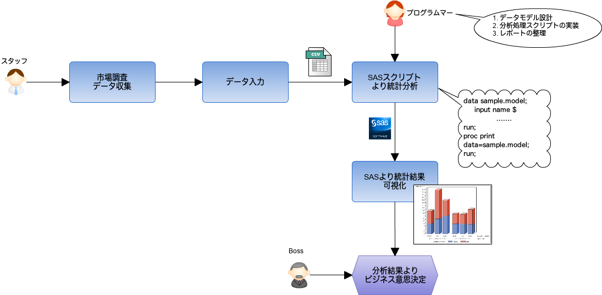

Table of Contents
ある飲み会で JT のプログラムマーさんと出会って、最初彼からの自己紹介で「プログラムマー
です」と聞いた時に、Java屋、Ruby屋普通のWebエンジニアだと思った。話を詳しく聞くとなん
と、「SAS」という言語しか扱っていないようです。 SAS という言語は初耳なので、軽く調べること
にした。
1 SASとは
SASの全称はStatistical Analysis System、日本語発音は「サス」というようです。 以下はIT用語辞書からの引用です。
SAS Institute社が開発・販売している、統計解析ソフトを中心とするソフトウェア製品群のブ ランド名。また、SAS Institute社自体。 世界的に人気の高い統計解析ソフトウェアで、1960年代から主に大学や研究所で科学・工学分野 の研究に用いられてきた。近年ではビジネス向けの機能や関連製品が充実し、主要なBI(ビジネ スインテリジェンス)ツールの一つとして企業の業務分析や意思決定支援の分野でも導入が進ん でいる。
なんと1960年代、父親が生まれた時代ですね、かなり古い！
という訳で、「SAS」は言語名、会社名、ソフトウェア製品群のブランド名として使える。次に SAS言語についてです。
2 SAS言語
以下は SAS入門1 からのSAS言語についての説明内容です。
ＳＡＳ言語は，非常に古いコンピュータ言語のひとつですが， ＦＯＲＴＲＡＮ，ＣＯＢＯＬ，Ｃといった第３世代言語（高級言語）と違い， 第４世代言語（４ＧＬ）または簡易言語と呼ばれる言語の１つです． １つの命令文の受け持つ処理が，高級言語よりたくさんの作業をこなしてくれるので，， プログラミングする人にとって複雑な内容を簡単に書くことができるというメリットがあります． ＳＡＳが得意とするデータ処理は，統計解析やデータマイニングといった，データ分析処理です． データを管理したり，データシステム構築することもできますが，大量データに対する データ分析機能は，ＳＡＳがナンバーワンといってもよいでしょう． 製薬，金融，マーケティング，通信，製造といった分野で広く使われています．
第４世代言語とい言われる代表的な言語は
- データベース分野のSQL
- 統計分野のR言語
- Web開発分野のRuby on Rails
があるでしょう。SASはこれらの言語の中にR言語と同じ分野ですね。 R言語は過去SI仕事でソフト の性能測定結果の統計分析で検証したことがあるので、なんとなくイメージが付きます。ここ でようやくSASとの接点が見つかりました。
ちなみにEmacsからRを扱う設定は 1 が参考になります。
3 統計分析のイメージ
JT のプログラムマーさんの話から考えると、SASを使ってデータを統計分析する作業流れは
以下のようなイメージのようです。(自信がない、間違っているかも知れない)

- 市場調査手段
- 紙媒体アンケート
- アンケートサイト
- SNS(Twitter,Facebookなど)より情報収集
- SASより統計分析
- 業務視点からデータモデルを設計する（SAS提供している専用モデルの流用など）
- SASスクリプトを実装する
- 1で収集したテキストデータを分析する
- レポートを出力する
モデリングの部分は業務知識が要求されるところでしょうね。
「医療統計学」でamazonを検索したら、本が結構出している感じがする。 http://www.amazon.co.jp/gp/bestsellers/books/720750
医療統計に関して、またっく知識がないのですが、ここではSASプログラムサンプルコードを見 てスクリプトのイメージを掴みたいと思います。
4 SASプログラムのイメージ
以下はSASプログラムの雛形です。
options ...
data <DATAセット名>;
infile '<CSVファイルのパス>';
INPUT 変数名1 変数名2 変数名3 ......;
proc プロシジャー名 その他オプション;
run;
以下は、 plot プロシージャーを利用してテキストデータからアスキーグラフを表現するSAS
プログラムサンプルです。
options nodate number pageno=1 linesize=80 pagesize=35;
data djia;
input Year @7 HighDate date7. High @24 LowDate date7. Low;
format highdate lowdate date7.;
datalines;
1954 31DEC54 404.39 11JAN54 279.87
1955 30DEC55 488.40 17JAN55 388.20
...more data lines...
1993 29DEC93 3794.33 20JAN93 3241.95
1994 31JAN94 3978.36 04APR94 3593.35
;
proc plot data=djia;
plot high*year='*';
title 'High Values of the Dow Jones Industrial Average';
title2 'from 1954 to 1994';
run;
コードは Base SAS(R) 9.2 Procedures Guide から引用しています。
出力結果は以下のようなイメージになります。
High Values of the Dow Jones Industrial Average 1
from 1954 to 1994
Plot of High*Year. Symbol used is '*'.
High |
|
4000 + *
| *
|
| *
| *
3000 + *
| * *
|
|
| *
2000 + *
|
| *
|
| **
1000 + ***** *** *** ***
| **** * ** *
| *****
| **
|
0 +
|
---+---------+---------+---------+---------+---------+--
1950 1960 1970 1980 1990 2000
Year
SASプログラムの文法構造がかなり gnuplot と似ってことが気付きました。でも gnuplot が生
まれるのが1986年なので、後者が前者の形を引き続いた気がします。仕事でソフトの性能検証デー
タをフラフに加工する処理でよくgnuplotを使っています。 OSS なので無償で使える。SASで
も同じことができると思いますが、かなり高額のようです。コストパフォーマンスが悪いでしょ
うね。
5 無償で使えるの？
商用がメインなのでかなり高額です。SAS無償で使えるやつがあるけど、大学研究用途のみです。 おそらく個人勉強用でも問題内でしょう。詳細は Sas University Editionを使おう（インストール編）
SAS University Editionのダウンロードリンク http://www.sas.com/en_us/software/university-edition/download-software.html
機会があれば、導入して遊んで見たいと思います。
6 日本での事例
- ビッグデータ領域で、NECとSAS Institute Japanが協業
- 日本たばこ産業株式会社
- 他にも結構あります。2